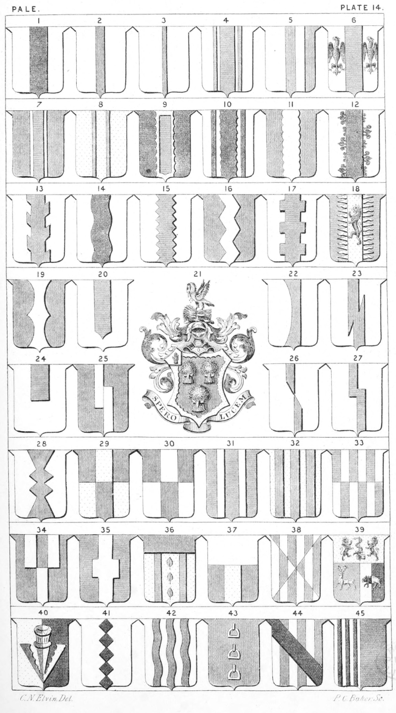

Plate 14.

Plate 14.
- Ar. a Pale sa.
- Ar. a Pallet gu.
- Ar. an Endorse or Indorse gu.
- Ar. a Pale endorsed az, or a Pale
betw. two Indorses
- Per Pale, a Pale counterchanged
- Pale Between two Eagles displayed
wings inverted
- Pale Surmounted of another
- Pale Voided. Or a pale gu. voided of
the field
- Pale Fimbriated, or bordered engrailed.
- Pale Engrailed betw. two pallets
- Pale Invecked, or invected
- Pale Flory-counter Flory
- Pale Raguly
- Pale Wavy
- Pale Indented
- Pale Dancettee
- Pale Bretessed
- Pale Radiant, (az. on a Pale-radiant
or, a Lion ramp, gu.) also
termed Rayonnee
- Pale Double arched
- Pale Fitchée in the foot
- Arms of a Baronet. Gu. three garbs
and a Bordure engr. or. above
the Shield an helmet befitting
his degree, mantled gu. doubled
ar. on a wreath of the colours
the Crest, on a Garb lying
fesseways or, a Pelican vulning
herself ppr. Kemp. Bart.
- Pale Champaine
- Pale Bevilled
- Pale Retracted
- Pale Fracted, or removed and overlaid
- Pale Fracted, or removed
- Pale Angled
- Pale Lozengy conjoined
- Pale Counterchanged. Per Fesse gu.
and or, a Pale counterchanged
- Paly of three parted per Fesse, also
termed Paly and Fesse of six
- Two Pales
- Three Pales
- Paly of six per-fesse counterchanged
see also P. 22. f. 42
- Two Pales couped in fesse conjoined
to another
- Pale angled quarter, or a Pale
nowy quadrate
- Or three rose leaves in pale vert.
betw. two Pallets az., a chief gu
- Per Fesse in clave, or per fesse a
Pale in base. Per fesse ar. and
gu. in base a Pale or.
- Paly of six Saltiery counterchanged
- Per-Fesse, the base Per-Pale in
chief or, a dexter hand couped
at the wrist grasping a sword
erect entwined with a serpent
ppr. betw. two lions ramp, respecting each other gu.; the
dexter base vert, charged with
a brick trippant or.; on the sinister base per-pale ar. and sa. a
boar pass, counterchanged
- Per Pale a Pheon counterchanged
- Five Lozenges in Pale
- Three Palets wavy
- Three stirrups with leathers couped
in pale
- Paly of six ar. and gu. a Bend sa.
- Per-Pale ar. and az. in the first.
three pallets sa.